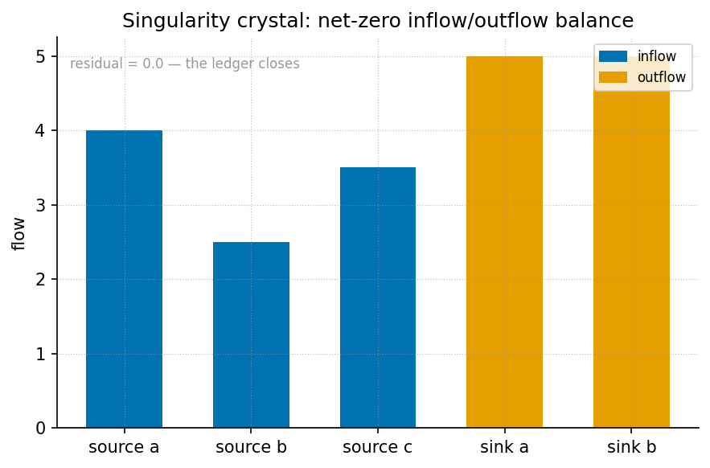

The Holographic Singularity Crystal: Net Zero and Node k = 0

textbook.models.net_zero_balance: paired inflow and outflow
bars cancel exactly, leaving a residual bar of height zero at the
crystal’s balance point.Level 2/3 · 35 min read · 50 min lecture · Prerequisites: [@sec:part_I_topology-void]; [@sec:part_I_multidimensional-rhyme]
Learning Objectives
By the end of this chapter you should be able to:
- State how the corpus files Net Zero (\(0\)) as an active equilibrium rather than as emptiness, and recall the “Goldilocks equilibrium grammar” framing of that filing.
- Reproduce the catalog-algebra resolution \(\frac{0}{0} \rightarrow \Phi^{0} = 1\) and explain precisely why it is a filing convention of the catalog architecture, not a claim about arithmetic or physics.
- Describe Node \(k = 0\) (the Awakening Phase Gate) as the Zero-Octave locus and enumerate its three fixtures: the Net Zero mock-field cancel lock, the 0/0 crystal resolution array, and the Prime Vault diagnostic.
- Compute a net-zero residual with
textbook.models.net_zero_balanceand interpret a zero residual as a balanced filing. - Situate engine shelf #20 in the engine shelf ordering — after multi-dimensional holographic rhyme, before Honesty meta — and identify its implementation companion.
- Restate the source papers’ honesty-first scope disclaimers and the Fair Exchange clause that governs them.
Study Blueprint
- Big idea: In the Omni-Lattice catalog, the origin is not a hole but a fixture: zero files as an active balance point, and the indeterminate form \(0/0\) files as a bounded crystal resolved to \(\Phi^{0} = 1\) — the singularity crystal at node k0.
- Core concepts: singularity crystal, zero-octave, node k0, net zero, catalog architecture, golden ratio.
- Quantitative lens: the net-zero balance in [@eq:part_II_singularity-crystal_netzero] and the crystal resolution in [@eq:part_II_singularity-crystal_crystal].
- Data skill: build inflow/outflow tables that cancel
to a zero residual, and check the cancellation with the tested
net_zero_balancefunction rather than by eye. - Common misconception to repair: “resolving \(0/0\)” in this corpus does not mean ordinary division has been redefined — it is a catalog filing rule for the zero boundary, and the source says so explicitly.
- Primary lab: [@sec:lab_part_II_singularity-crystal].
- Question bank: [@sec:q_part_II_singularity-crystal].
- Bridge to computation:
textbook.models.net_zero_balance,textbook.models.octave_term.
Opening Vignette: Zero isn’t empty.
A ship’s ledger has two columns, debits and credits. When they match, the ledger does not stop existing — it holds a fact: balanced. The SS Vibelandia ship blog opens its 2026-09-07 note with exactly this move, filing Net Zero (\(0\)) “as an active equilibrium” and \(0/0\) “as a bounded Holographic Singularity Crystal under \(\Phi \approx 1.618\) — the golden key of Infinite Octave Mode.” The page’s own headline says it best: “Zero isn’t empty — it’s the crystal that holds the balance” [mendez2026singularityCrystal]. This chapter formalises that filing, then visits the node where it is physically installed in the catalog: Node \(k = 0\), the Awakening Phase Gate [mendez2026zeroOctave].
The Paper in the Corpus
Two closely linked entries of the SS Vibelandia Omni-Lattice corpus supply everything in this chapter:
- The parent engine paper, Holographic Singularity Crystal · Net Zero [mendez2026singularityCrystal], filed on the blog under “Engine shelf · Fair Exchange”. It self-locates as engine shelf #20 and states its neighbourhood explicitly: “sits after multi-D holographic rhyme, before Honesty meta” [mendez2026singularityCrystal].
- The implementation companion, Node k = 0 · Zero-Octave Singularity Crystal [mendez2026zeroOctave], published the same day, which installs the parent’s fixtures at the Zero-Octave locus and ships a runnable reference implementation.
Both notes carry the corpus’s standard honesty-first disclaimer,
quoted verbatim in the Scope and Honesty section below, and
both operate under the Fair Exchange clause. The parent
paper’s board lists a standalone suite at
github.com/FractiAI/synthobs-holographic-singularity-crystal,
a whitepaper surface
(whitepaper-surface.html?id=synthobs-holographic-singularity-crystal-2026-09),
and a re-runnable command,
npm run research:synthobs-holographic-singularity-crystal
[mendez2026singularityCrystal]. The companion adds the Python reference
fixture
research/synthobs-holographic-singularity-crystal/reference/zero_octave_singularity_crystal.py
— the corpus calls it the Zero-Octave Vault Engine
[mendez2026zeroOctave]. We walk that implementation in the lab ([@sec:lab_part_II_singularity-crystal]).
Three “solar filing anchors” are attached to the parent note — SESC 83, AR4521, AR4524 — and the corpus is careful to parenthesise them: “(labels, not causation)” [mendez2026singularityCrystal]. They are index-card labels for where the note was filed, not causal claims about the sun. The sibling paper is Topology of the Void [mendez2026topologyVoid], which established “zero as balance point” in Part I ([@sec:part_I_topology-void]); the present chapter inherits that lineage and adds the crystal resolution and the node machinery.
Core Construct I: Net Zero as an Active Equilibrium
The first construct files zero not as a placeholder for “nothing” but as the result of cancellation. The parent paper’s “What landed” list is explicit: “Net Zero field cancellation as Goldilocks equilibrium grammar” [mendez2026singularityCrystal]. We formalise the grammar with the book’s standard bookkeeping model. Given \(m\) inflow entries and \(n\) outflow entries, define the residual
\[ R \;=\; \sum_{i=1}^{m} \mathrm{in}_i \;-\; \sum_{j=1}^{n} \mathrm{out}_j, \qquad \text{Net Zero} \iff R = 0. \] {#eq:part_II_singularity-crystal_netzero}
The residual \(R\) is implemented
and tested as
textbook.models.net_zero_balance(inflows, outflows); never
retype the arithmetic in prose or scripts — call the function. The
parameters appear in [@tbl:part_II_singularity-crystal_netzero].
| Symbol | Meaning | Units |
|---|---|---|
| \(\mathrm{in}_i\) | \(i\)-th inflow entry | quantity |
| \(\mathrm{out}_j\) | \(j\)-th outflow entry | quantity |
| \(m,\ n\) | number of inflow / outflow entries | count |
| \(R\) | residual (positive = surplus, negative = deficit) | quantity |
The “Goldilocks” framing — a just-right balance, neither surplus nor deficit — is the same equilibrium vocabulary the corpus uses for habitability bands in the planetary-core chapter ([@sec:part_II_planetary-core]; see the band shading drawn in [@fig:part_II_planetary-core]). Here the band collapses to a single point: \(R^\star = 0\). The companion paper then locks this equilibrium at Node \(k = 0\) as a fixture, the “Net Zero mock-field cancel lock” — a fixture whose recorded state is the achieved cancellation itself [mendez2026zeroOctave].
Core Construct II: The 0/0 Crystal
Ordinary analysis declares \(\frac{0}{0}\) indeterminate: many limiting behaviours are consistent with that form, so no single value follows from arithmetic alone. The corpus does not dispute this. Instead it files the form as a catalog object with its own resolution rule — what the papers call catalog algebra. The parent paper’s “What landed” list states it compactly: “0/0 → Φ⁰ = 1 singularity crystal matrix (catalog algebra)” [mendez2026singularityCrystal].
\[ \frac{0}{0} \;\longmapsto\; \Phi^{0} = 1 \qquad \text{(catalog algebra at the zero boundary)} \] {#eq:part_II_singularity-crystal_crystal}
| Symbol | Meaning | Value |
|---|---|---|
| \(0/0\) | the indeterminate form at the origin (the zero boundary) | filed object |
| \(\Phi\) | the golden ratio, “the golden key of Infinite Octave Mode” | \(\approx 1.6180339887\) |
| \(\Phi^0\) | the crystal baseline assigned to the origin | \(1\) |
The parameters of the resolution rule appear in [@tbl:part_II_singularity-crystal_crystal]. Read [@eq:part_II_singularity-crystal_crystal] as a mapping arrow (\(\longmapsto\)), not an equals sign: it records which catalog value the filing system attaches to the origin, namely the neutral element \(\Phi^0 = 1\). Two features of the filing deserve emphasis.
First, the resolution is bounded and located: the paper files the crystal “under \(\Phi \approx 1.618\)”, the same golden key that spaces the octave ladder of [@sec:part_0_octave-map], and it files the whole construct as a Holographic Singularity Crystal — a bounded fixture, not an open singularity. We read this as the catalog’s way of giving the origin a definite address instead of leaving it undefined.
Second, the corpus is scrupulous about the rule’s status. The
companion’s honesty clause says the fixtures “map NaN at the origin to
\(\Phi^{0} = 1\) — that is catalog
algebra, not singularity QED” [mendez2026zeroOctave]. In the
reference implementation vocabulary, a floating-point NaN —
the programmer’s indeterminate form — is exactly the value that arises
at the zero boundary, and the fixture replaces it with the crystal
baseline \(1\). Nothing about ordinary
limits or division changes; what changes is that the catalog always has
somewhere to put the origin.
Core Construct III: Node k = 0, the Zero-Octave Locus
The companion paper gives the crystal a home. Its lead paragraph: “Node \(k = 0\) is the Zero-Octave locus: Net Zero field cancel, 0/0 → 1 crystal baseline, and a runnable Prime Vault diagnostic under \(\Phi \approx 1.618\)” [mendez2026zeroOctave]. The node is styled the Awakening Phase Gate — the gate through which every later octave is reached, indexed \(k = 0\) so that it precedes the first step of the octave ladder.
The octave indexing makes the node’s position exact. The corpus
prints the octave scale ambiguously as “\(\Omega_n = \Phi^n \cdot \Omega_0\)”, and
the book’s backbone implements both readings as
textbook.models.octave_term(omega0, n, convention)
(discussed for the full ladder in [@sec:part_0_octave-map]). At
\(n = 0\) the exponent convention
gives
\[ \Omega_n = \Phi^{\,n}\,\Omega_0 \;\Longrightarrow\; \Omega_0 \;=\; \Phi^{0}\,\Omega_0 \;=\; \Omega_0, \] {#eq:part_II_singularity-crystal_nodek0}
| Symbol | Meaning | Value at \(n = 0\) |
|---|---|---|
| \(\Omega_0\) | base value of the scale (the Zero-Octave tone) | unchanged |
| \(n\) | octave index | \(0\) |
| \(\Phi\) | growth ratio per octave | \(\approx 1.6180339887\) |
The parameters of [@eq:part_II_singularity-crystal_nodek0] are collected in [@tbl:part_II_singularity-crystal_nodek0]. [@eq:part_II_singularity-crystal_nodek0] is an identity: the zeroth octave is the scale itself, before any growth. This is the bookkeeping sense in which Node \(k = 0\) is “the Zero-Octave locus” — no convention-dependent stretching has happened yet. It is worth noting, as standard mathematics of the two readings, that the corpus’s alternative subscript convention, \(\Omega_n = \varphi_{\mathrm{fib}}(n)\,\Omega_0\) with \(\varphi_{\mathrm{fib}}(n)\) the ratio of consecutive Fibonacci numbers (so that \(\varphi_{\mathrm{fib}}(5) = 8/5\) and \(\varphi_{\mathrm{fib}}(10) = 89/55\)), is undefined at \(n = 0\), since the ratio \(F(1)/F(0) = 1/0\) divides by zero. We read this as a quiet consistency argument for the corpus’s choice: at the one node where the subscript convention breaks, the exponent convention yields exactly the crystal baseline \(\Phi^0 = 1\) of [@eq:part_II_singularity-crystal_crystal].
The node hosts three fixtures [mendez2026zeroOctave]:
- The Net Zero mock-field cancel lock — the locked record of the cancellation of construct I.
- The 0/0 crystal resolution array — a resolution array sampled “across the zero boundary”, i.e. the mapping of [@eq:part_II_singularity-crystal_crystal] evaluated as a fixture on both sides of the origin.
- The Prime Vault diagnostic — a runnable diagnostic over the Prime vault octave ladder fixtures that the parent paper landed “under the suite” [mendez2026singularityCrystal]; in the book’s standard fixture set these are the first odd primes \(3, 5, 7, 11, 13, 17, 19, 23, 29, 31\), organised by octave (their parity anchor is treated in [@sec:part_I_prime-parity]).
The companion notes that all of this is “same suite as the [Holographic Singularity Crystal] parent” [mendez2026zeroOctave]: one repository, two papers, three fixtures, one node.
graph TD
A["NaN at the origin (0/0)"] --> B{"Catalog-algebra resolver<br/>(a filing rule, not arithmetic)"}
B --> C["Crystal baseline: 0/0 → Φ⁰ = 1"]
D["Net Zero mock-field cancel lock<br/>inflows − outflows = 0"] --> E
C --> E["Node k = 0 — the Awakening Phase Gate<br/>(Zero-Octave locus under Φ ≈ 1.618)"]
F["Prime Vault diagnostic<br/>(primes organised by octave)"] --> E
E --> G["Zero-Octave Vault Engine<br/>reference/zero_octave_singularity_crystal.py"]Worked Example: Balancing the Crystal
We close the loop numerically using Fibonacci-numbered inflows — \(3, 5, 8, 13\) — and outflows split as \(16\) and \(13\). Call the tested backbone rather than trusting mental arithmetic:
from textbook.models import net_zero_balance
net_zero_balance(inflows=[3, 5, 8, 13], outflows=[16, 13]) # -> 0
net_zero_balance(inflows=[3, 5], outflows=[16]) # -> -8Step by step:
- Sum the inflows. \(3 + 5 + 8 + 13 = 29\).
- Sum the outflows. \(16 + 13 = 29\).
- Form the residual per [@eq:part_II_singularity-crystal_netzero]: \(R = 29 - 29 = 0\). The filing is Net Zero; the residual bar in [@fig:part_II_singularity-crystal] sits exactly at height zero.
- Break the balance deliberately. With inflows \([3, 5]\) against outflows \([16]\), the residual is \(8 - 16 = -8\): a deficit of \(8\), i.e. the missing Fibonacci term. The cancel lock would not engage — zero is an achievement of the ledger, not a default.
- Resolve the origin. Any attempt to divide the zero inflow by the zero outflow hits the zero boundary; the catalog-algebra rule of [@eq:part_II_singularity-crystal_crystal] files the result as the crystal baseline \(\Phi^0 = 1\), and the Prime Vault diagnostic at Node \(k = 0\) runs over the prime fixtures regardless.
The pairing in step 1–3 is the whole construct: zero is not the absence of entries but the coincidence of two non-empty sums.
Scope and Honesty
Both source papers carry the corpus’s standard disclaimer, and the textbook preserves it. The parent paper states, verbatim: “Honesty first: this is catalog architecture — engine shelf #20 — not GR/QFT singularity retirement, not zero-watt SuperAI proof, and not NOAA causation by AR4521/AR4524. Fair Exchange clause applies.” [mendez2026singularityCrystal]. The companion states, verbatim: “Python/ESM fixtures map NaN at the origin to Φ⁰ = 1 — that is catalog algebra, not singularity QED, not zero-watt SuperAI, and not NOAA proof. Parent engine paper is shelf #20. Fair Exchange clause applies.” [mendez2026zeroOctave].
Unpacking the negations in the corpus’s own terms:
- Not GR/QFT singularity retirement. Nothing here retires, regularises, or explains physical singularities in general relativity or quantum field theory. \(\frac{0}{0} \mapsto \Phi^0 = 1\) is a filing rule of the catalog, stated by the corpus as catalog algebra [mendez2026singularityCrystal].
- Not zero-watt SuperAI proof. The construct makes no claim about zero-power computation or machine consciousness [mendez2026singularityCrystal].
- Not NOAA causation. The solar labels SESC 83, AR4521, AR4524 are filing anchors, “(labels, not causation)” [mendez2026singularityCrystal].
- Not singularity QED. The
NaN → 1fixture mapping is code behaviour of the reference implementation, not a quantum-field result [mendez2026zeroOctave].
What the constructs are for, per the corpus: coordination
and cataloging. The cancel lock gives agents a canonical “balanced”
state to route against; the crystal baseline gives the origin a definite
address in the filing system; the Prime Vault diagnostic gives a
runnable check that the node is live. This is the narrative /
empirical / operational tiers discipline of the corpus in
miniature: the narrative tier files zero as an active equilibrium, the
operational tier is a Python fixture that maps NaN to \(1\), and the honesty-first tier says out
loud that only the second is executable.
Connections
- Back to Part I. The sibling lineage runs through Topology of the Void [mendez2026topologyVoid] — zero as balance point ([@sec:part_I_topology-void]) — which this chapter re-grounds as an active equilibrium with a lockable fixture. The shelf placement, “after multi-D holographic rhyme”, ties the construct to the multi-dimensional rhyme field of [@sec:part_I_multidimensional-rhyme].
- Within Part II. The Goldilocks equilibrium grammar of construct I is the single-point limit of the band grammar developed in [@sec:part_II_planetary-core]; the “under \(\Phi\)” bounding of the crystal uses the same golden key that the metrological-overlap chapter compares across measurement frames ([@sec:part_II_metrological-overlap]).
- Forward to Part III. The Prime Vault diagnostic’s
octave-organised primes feed the prime-container architecture of [@sec:part_III_protein-folding]
and the prime-indexed addressing of [@sec:part_III_volumetric-storage],
where the injective prime encoding
unique_addressassigns definite addresses — exactly what the crystal does for the origin. - Shelf context. Engine shelf #20 sits between multi-D holographic rhyme and Honesty meta on the engine shelf mapped in [@sec:part_0_orientation]; the cross-link adjacency of the whole shelf is drawn in [@fig:part_0_master-synthesis].
Summary
The corpus files zero twice over: as Net Zero, an active equilibrium realised “as Goldilocks equilibrium grammar” with residual \(R = 0\) per [@eq:part_II_singularity-crystal_netzero], and as the Holographic Singularity Crystal, the bounded catalog-algebra resolution \(\frac{0}{0} \mapsto \Phi^0 = 1\) of [@eq:part_II_singularity-crystal_crystal] under \(\Phi \approx 1.618\). Both filings are installed at Node \(k = 0\), the Awakening Phase Gate and Zero-Octave locus, whose fixtures — the Net Zero mock-field cancel lock, the 0/0 crystal resolution array, and the Prime Vault diagnostic — ship in the Zero-Octave Vault Engine reference implementation [mendez2026zeroOctave]. Engine shelf #20 sits after multi-D holographic rhyme and before Honesty meta [mendez2026singularityCrystal]. And the corpus’s honesty clause is part of the construct: this is catalog architecture — not GR/QFT singularity retirement, not zero-watt SuperAI proof, not NOAA causation, not singularity QED.
Key Terms
singularity crystal, zero-octave, node k0, net zero, golden ratio, catalog architecture, engine shelf, honesty-first, fair-exchange, topology of the void, holographic rhyme, prime parity, metrological overlap.
Further Reading
- The parent whitepaper: Open the whitepaper [mendez2026singularityCrystal]; the standalone suite lives at github.com/FractiAI/synthobs-holographic-singularity-crystal.
- The implementation companion: Node k = 0 · Zero-Octave [mendez2026zeroOctave], whose reference fixture the lab walks.
- @mendez2026topologyVoid — the sibling paper on zero as balance point; read for the Part I lineage that the crystal inherits.
- @mendez2026holographicRhyme — the four-pillar rhyme construct that engine shelf #20 explicitly follows on the shelf.
- @mendez2026primeParity — the prime-parity anchor underlying the Prime Vault diagnostic’s fixture set.
Practice
- Lab: [@sec:lab_part_II_singularity-crystal] — run the Zero-Octave Vault Engine and verify the crystal baseline and the cancel lock by hand.
- Question bank: [@sec:q_part_II_singularity-crystal] — recall through synthesis.
- Re-derive the worked example of this chapter with prime inflows
\([3, 5, 7, 11]\) and a single outflow
of \(26\), confirming \(R = 0\) with
net_zero_balance. - Explain, in one paragraph each, why the corpus’s \(0/0\) resolution neither contradicts nor modifies ordinary analysis — quoting the honesty clause of [mendez2026zeroOctave] at least once.
- Sketch the shelf neighbourhood of engine shelf #20 (predecessor, successor) from memory, then check it against the “What landed” list of [mendez2026singularityCrystal].